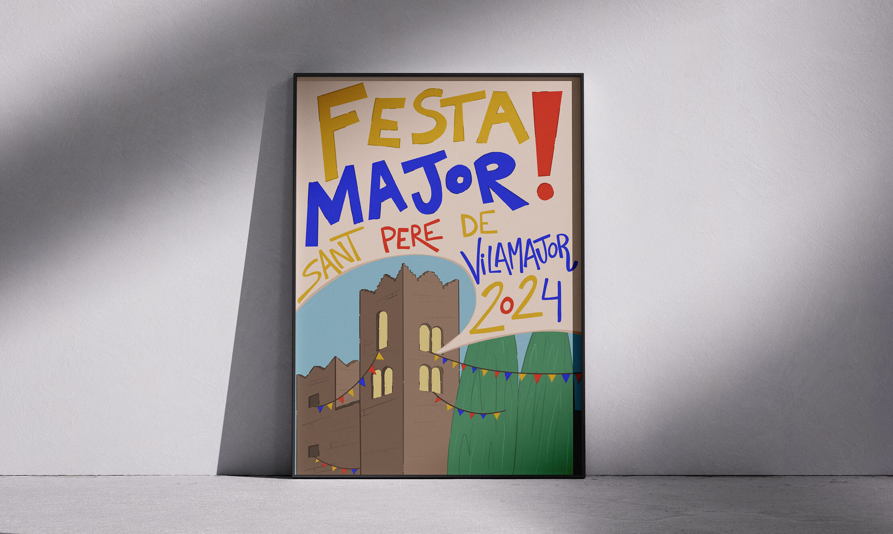
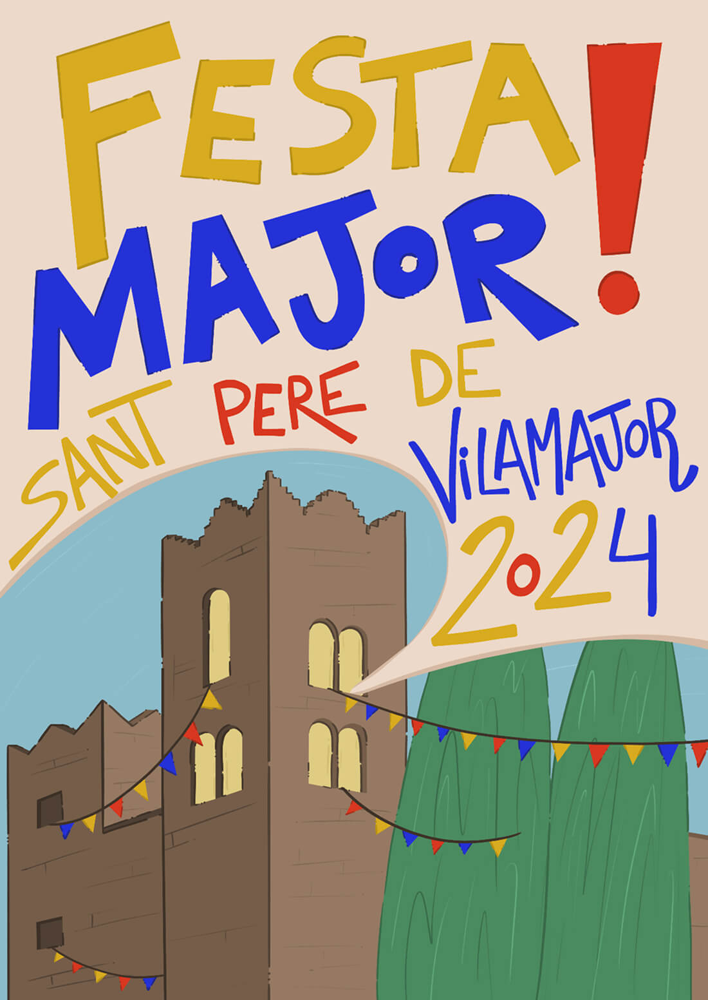
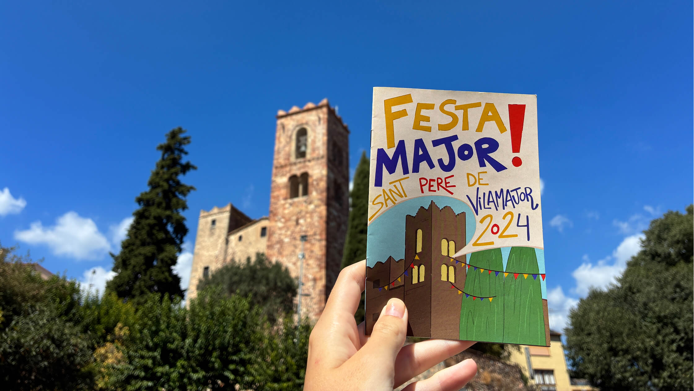

Festa Major de Sant Pere: Poster
2025
Competition Project

This project is the winning design for the 2024 Festa Major (Main Festival) poster contest in the town of Sant Pere de Vilamajor.
My goal was to create an eye-catching, joyful illustration that authentically represents the town's spirit and cultural heritage. The composition is anchored by the town's iconic church tower and a dynamic burst of color and bold, hand-drawn typography emerges directly from the building, acting as a visual shout that announces the festival with energy and warmth.

